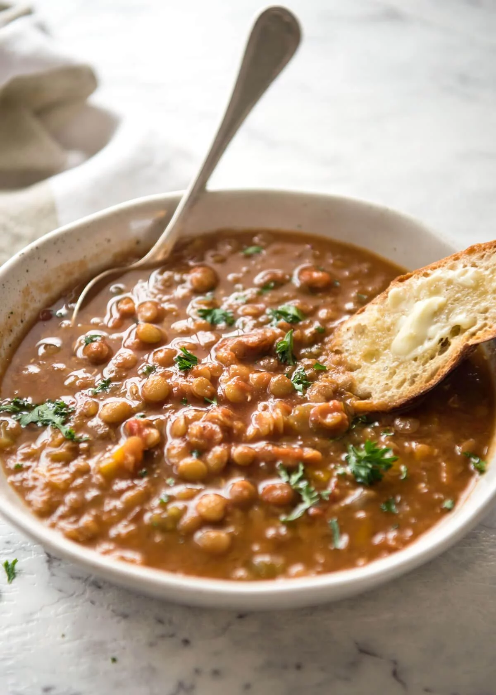

Výživná a sytá polévka z čočky se smetanovou jíškou, česnekem a kousky párků. Ideální pro chladné dny.
Čočku propláchneme, zalijeme vodou a přivedeme k varu. Vaříme téměř doměkka. Podle potřeby doléváme horkou vodu.
Cibuli nakrájíme najemno a osmažíme na oleji dozlatova. Přidáme hladkou mouku a připravíme světlou jíšku.
Do hotové jíšky přimícháme sladkou papriku, zašleháme vodu a přivedeme k varu. Vaříme asi 20 minut na mírném plameni.
Ke konci přidáme prolisovaný česnek, předvařenou čočku a nakrájené párky. Dochutíme solí a pepřem a krátce provaříme.